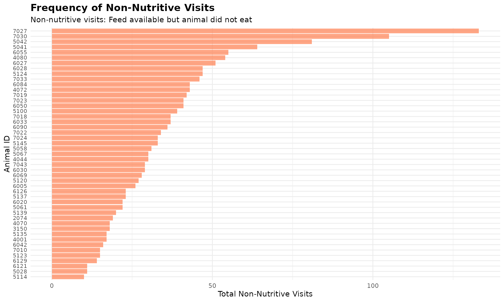
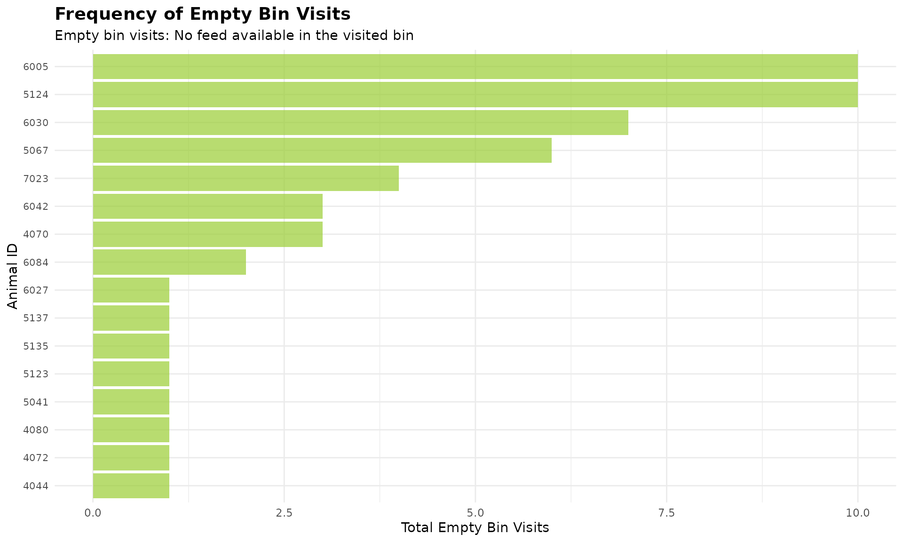

1. 🚨 Important: Set Your Global Variables First
Before analyzing non-nutritive visit patterns, configure global variables to match your data structure:
# Configure global variables for your data structure
set_global_cols(
id_col = "cow", # Animal ID column name
start_col = "start", # Visit start time column
end_col = "end", # Visit end time column
bin_col = "bin", # Bin/feeder ID column
intake_col = "intake", # Feed intake amount column
dur_col = "duration", # Visit duration column
tz = "America/Vancouver" # Your timezone
)2. Introduction to Non-Nutritive Visits
In nature, animals explore their environment while foraging. In the barn, we have observed that not every bin visit result in the cow actually feeding. Sometimes they visit a feeder, see that feed is available, but choose not to eat. We refer to those as non-nutritive visits, which potentially reflects exploratory behaviour.
3. Prerequisites
This tutorial assumes completion of previous data processing steps in Tutorial 1: Data Cleaning.
4. Data Preparation
# Load cleaned example data
data(clean_feed)
# If you're using your own data from previous tutorials, use this instead:
# clean_feed <- your_cleaned_feed_data # From your cleaning results5. Understanding Non-Nutritive Visits
A non-nutritive visit is defined as when:
- The animal visits a bin
- Feed is available in the bin (start weight > calibration error)
- The animal consumes little or no feed (intake ≤ calibration error)
The calibration error is the measurement threshold below which values are considered zero due to equipment sensitivity (typically 0.5 kg for feed bins).
Sorting Results
Both calculate_non_nutritive_visits() and
calculate_no_feed_visits() support an optional
sort parameter to order results by visit frequency:
-
sort = 0(default) - No sorting -
sort = 1- Ascending order (lowest to highest visits)
-
sort = -1- Descending order (highest to lowest visits)
This feature helps quickly identify animals with the most (or least) visits of each type.
Calculate Non-Nutritive Visits
# Create quality control configuration with calibration error
my_qc_config <- qc_config(
calibration_error = 0.5 # Equipment measurement threshold (kg)
)
# Calculate non-nutritive visits for each animal on each day.
non_nutritive <- calculate_non_nutritive_visits(
data = clean_feed, # Our cleaned feed data
cfg = my_qc_config # Configuration with calibration error
)
# Examine the first day's results (unsorted)
cat("Non-nutritive visits on first day (unsorted):\n")
#> Non-nutritive visits on first day (unsorted):
head(non_nutritive[[1]])
#> # A tibble: 6 × 2
#> cow number_of_non_nutritive_visits
#> <int> <int>
#> 1 2074 19
#> 2 3150 18
#> 3 4001 17
#> 4 4044 30
#> 5 4070 18
#> 6 4072 43Using the Sort Parameter
# Sort by highest non-nutritive visits first (descending)
non_nutritive_desc <- calculate_non_nutritive_visits(
data = clean_feed,
cfg = my_qc_config,
sort = -1 # Sort descending (highest first)
)
cat("\n Animals with MOST non-nutritive visits (top 5):\n")
#>
#> Animals with MOST non-nutritive visits (top 5):
head(non_nutritive_desc[[1]], 5)
#> # A tibble: 5 × 2
#> cow number_of_non_nutritive_visits
#> <int> <int>
#> 1 7027 133
#> 2 7030 105
#> 3 5042 81
#> 4 5041 64
#> 5 6055 55
# Sort by lowest non-nutritive visits first (ascending)
non_nutritive_asc <- calculate_non_nutritive_visits(
data = clean_feed,
cfg = my_qc_config,
sort = 1 # Sort ascending (lowest first)
)
cat("\n Animals with LEAST non-nutritive visits (top 5):\n")
#>
#> Animals with LEAST non-nutritive visits (top 5):
head(non_nutritive_asc[[1]], 5)
#> # A tibble: 5 × 2
#> cow number_of_non_nutritive_visits
#> <int> <int>
#> 1 5114 10
#> 2 5028 11
#> 3 6121 11
#> 4 6129 14
#> 5 5123 156. Understanding No-Feed Visits
A no-feed visit (or empty bin visit) occurs when:
- The animal visits a feeding bin
- No feed is available in the bin (start weight ≤ calibration error)
- The animal cannot consume anything (intake ≤ calibration error)
These visits indicate animals are checking bins that are already empty, which may reflect:
- The animal having lots of empty bin visits may indicate that they are disadvantaged, because they can only eat the “leftovers” after others have finished eating.
- High feeding competition (bins emptied quickly)
- Feed management issues (e.g., we may need to adjust the feed delivery timing or amount)
Calculate No-Feed Visits
# Calculate visits to empty bins for each animal on each day
no_feed <- calculate_no_feed_visits(
data = clean_feed, # Our cleaned feed data
cfg = my_qc_config # Configuration with calibration error
)
# Examine the first day's results (unsorted)
cat("No-feed visits on first day (unsorted):\n")
#> No-feed visits on first day (unsorted):
head(no_feed[[1]])
#> # A tibble: 6 × 2
#> cow number_of_visits_when_no_feed
#> <int> <int>
#> 1 4044 1
#> 2 4070 3
#> 3 4072 1
#> 4 4080 1
#> 5 5041 1
#> 6 5067 6
# Sort by highest empty bin visits (descending) to identify animals checking empty bins most
no_feed_desc <- calculate_no_feed_visits(
data = clean_feed,
cfg = my_qc_config,
sort = -1 # Sort descending (highest first)
)
cat("\n Animals checking EMPTY bins most often (top 5):\n")
#>
#> Animals checking EMPTY bins most often (top 5):
head(no_feed_desc[[1]], 5)
#> # A tibble: 5 × 2
#> cow number_of_visits_when_no_feed
#> <int> <int>
#> 1 5124 10
#> 2 6005 10
#> 3 6030 7
#> 4 5067 6
#> 5 7023 4Visualize Non-Nutritive and No-Feed Patterns
# Use first day's data and get animals with most non-nutritive visits
top_nn <- head(non_nutritive_desc[[1]], 50)
ggplot(top_nn, aes(x = reorder(cow, number_of_non_nutritive_visits), y = number_of_non_nutritive_visits)) +
geom_bar(stat = "identity", fill = "coral", alpha = 0.7) +
coord_flip() +
labs(
title = "Frequency of Non-Nutritive Visits",
subtitle = "Non-nutritive visits: Feed available but animal did not eat",
x = "Animal ID",
y = "Total Non-Nutritive Visits"
) +
theme_minimal() +
theme(
axis.text.y = element_text(size = 8),
plot.title = element_text(size = 14, face = "bold"),
plot.subtitle = element_text(size = 11)
)
# Use first day's data and get animals checking empty bins
top_empty <- head(no_feed_desc[[1]], 50)
ggplot(top_empty, aes(x = reorder(cow, number_of_visits_when_no_feed), y = number_of_visits_when_no_feed)) +
geom_bar(stat = "identity", fill = "olivedrab3", alpha = 0.7) +
coord_flip() +
labs(
title = "Frequency of Empty Bin Visits",
subtitle = "Empty bin visits: No feed available in the visited bin",
x = "Animal ID",
y = "Total Empty Bin Visits"
) +
theme_minimal() +
theme(
axis.text.y = element_text(size = 8),
plot.title = element_text(size = 14, face = "bold"),
plot.subtitle = element_text(size = 11)
)
Note: Many animals have no empty bin visits, so they are excluded from the plot.
7. Code Cheatsheet
#' Copy and modify these code blocks for your own analysis!
# ---- SETUP: Global Variables (REQUIRED FIRST!) ----
library(moo4feed)
library(ggplot2)
library(dplyr)
# Set up your column names and timezone (modify these!)
set_global_cols(
id_col = "cow", # Your animal ID column
start_col = "start", # Visit start time column
end_col = "end", # Visit end time column
bin_col = "bin", # Bin/feeder ID column
intake_col = "intake", # Feed intake amount column
dur_col = "duration", # Visit duration column
tz = "America/Vancouver" # Your timezone
)
# ---- STEP 1: Load Your Data ----
# Load your cleaned data
data(clean_feed)
# Or use your own cleaned data from previous tutorials:
# clean_feed <- your_cleaned_feed_data
# ---- STEP 2: Create QC Configuration ----
my_qc_config <- qc_config(
calibration_error = 0.5 # Equipment measurement threshold (kg)
)
# ---- STEP 3: Calculate Non-Nutritive Visits ----
# Basic calculation (unsorted)
non_nutritive <- calculate_non_nutritive_visits(
data = clean_feed,
cfg = my_qc_config
)
# View first day results
head(non_nutritive[[1]])
# Sort by highest visits first (descending)
non_nutritive_desc <- calculate_non_nutritive_visits(
data = clean_feed,
cfg = my_qc_config,
sort = -1
)
head(non_nutritive_desc[[1]], 5)
# Sort by lowest visits first (ascending)
non_nutritive_asc <- calculate_non_nutritive_visits(
data = clean_feed,
cfg = my_qc_config,
sort = 1
)
head(non_nutritive_asc[[1]], 5)
# ---- STEP 4: Calculate No-Feed Visits ----
# Basic calculation (unsorted)
no_feed <- calculate_no_feed_visits(
data = clean_feed,
cfg = my_qc_config
)
# View first day results
head(no_feed[[1]])
# Sort by highest empty bin visits (descending)
no_feed_desc <- calculate_no_feed_visits(
data = clean_feed,
cfg = my_qc_config,
sort = -1
)
head(no_feed_desc[[1]], 5)
# ---- STEP 5: Visualize Results ----
# Non-nutritive visits bar plot (first day example)
top_nn <- head(non_nutritive_desc[[1]], 50)
ggplot(top_nn, aes(x = reorder(cow, number_of_non_nutritive_visits), y = number_of_non_nutritive_visits)) +
geom_bar(stat = "identity", fill = "coral", alpha = 0.7) +
coord_flip() +
labs(
title = "Frequency of Non-Nutritive Visits",
subtitle = "Non-nutritive visits: Feed available but animal did not eat",
x = "Animal ID",
y = "Total Non-Nutritive Visits"
) +
theme_minimal() +
theme(
axis.text.y = element_text(size = 8),
plot.title = element_text(size = 14, face = "bold"),
plot.subtitle = element_text(size = 11)
)
# Empty bin visits bar plot (first day example)
top_empty <- head(no_feed_desc[[1]], 50)
ggplot(top_empty, aes(x = reorder(cow, number_of_visits_when_no_feed), y = number_of_visits_when_no_feed)) +
geom_bar(stat = "identity", fill = "olivedrab3", alpha = 0.7) +
coord_flip() +
labs(
title = "Frequency of Empty Bin Visits",
subtitle = "Empty bin visits: No feed available in the visited bin",
x = "Animal ID",
y = "Total Empty Bin Visits"
) +
theme_minimal() +
theme(
axis.text.y = element_text(size = 8),
plot.title = element_text(size = 14, face = "bold"),
plot.subtitle = element_text(size = 11)
)